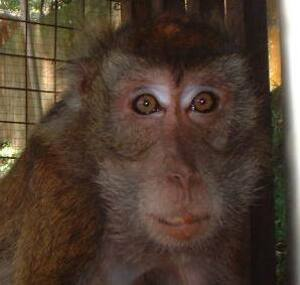

ubal 
/ʔubal/
n.
“monkey”
1.
n.
Macaca_philippinensis_mindanensis
a generic name for all kinds of monkey
Kenè kew dani te ubal su egkahaat.
Do not go near the monkey because it bites.
Wrd.Gloss: monkey
Cult. Raiders of cornfields can be tamed as pets body 20 in., tail 20 in., short black fur.
Spec. kusapeng
Spec. aliwas
Spec. pilas
Spec. nanib
Eng. macaque; monkey; ape; chimpanzee
Tag. matsíng; unggóy; tsónggo; amô
Ceb. matsing; unggoy; amò
Ilo.: bákes; súnggo
Tigwanon: ʔubal
Cotabato Manobo: ʔubal
Tasaday: ʔubal
WBM: ʔuval
Ilianen: ʔuval
Dibabawon: ʔubaa
Proto: ʔubal
OCM: Fauna (136)
DDP: Primate (1.6.1.1.1)
Online dict status: -
Usage level: B
2.
vi.
for someone, especially a child (eg-ubal, mig-ubal/in-ubal, agent, eg><ø-) to play-up; to fool around; to be naughty
Kenè kew eg-ubal te kenè ne kaniyu galawan su egkabelù ka kamuney.
Do not play of not your toy(s) because the owner will be irritated.
Eng. play-up; fool around; mess around; naughty
Online dict status: -
Usage level: M
vt.
for someone, especially a child (eg-ubal, mig-ubal/in-ubal, agent, eg><ø-) to mess up something (eg-ubalen, in-ubal/mig-ubal/pig-ubal, theme, eg><en-)
Iheles niyu ka buntuk su eg-ubalen te me batè.
Hide the hammer because because children will play it.
Eng. mess up; break; damage
Online dict status: -
Usage level: M
n.
(ubalen, -en) any toys (toy)
ubalen te batè
toy for children
Syn. balbalayen
Eng. toy
Tag. laruán
Ceb. galáhan
OCM: Childhood activities (857)
Online dict status: -
Usage level: R
n.
used of a mischevious child
Eng. mischevious; ratbag; scamp; scallywag; rascal
Online dict status: -
Usage level: M
3.
v.
for a person or group of people (eg-uubal, mig-uubal/in-uubal) to perform a monkey dance
Eng. dance, to; present a monkey dance, to; perfom a monkey dance, to
Online dict status: s
Usage level: R
Updated by: RJH,RJH,AAA,TME,AAA,QDL,NJK
Last updated: 30/Jul/2011
"ubal" in text "Datu Gawilan Rebels against the Government"
"ubal" in text "Datu Gawilan Rebels against the Government"
This page last updated: 03-Jan-2020
Copyright © 2009-2014, Matigsalug Language Christian Association, Inc